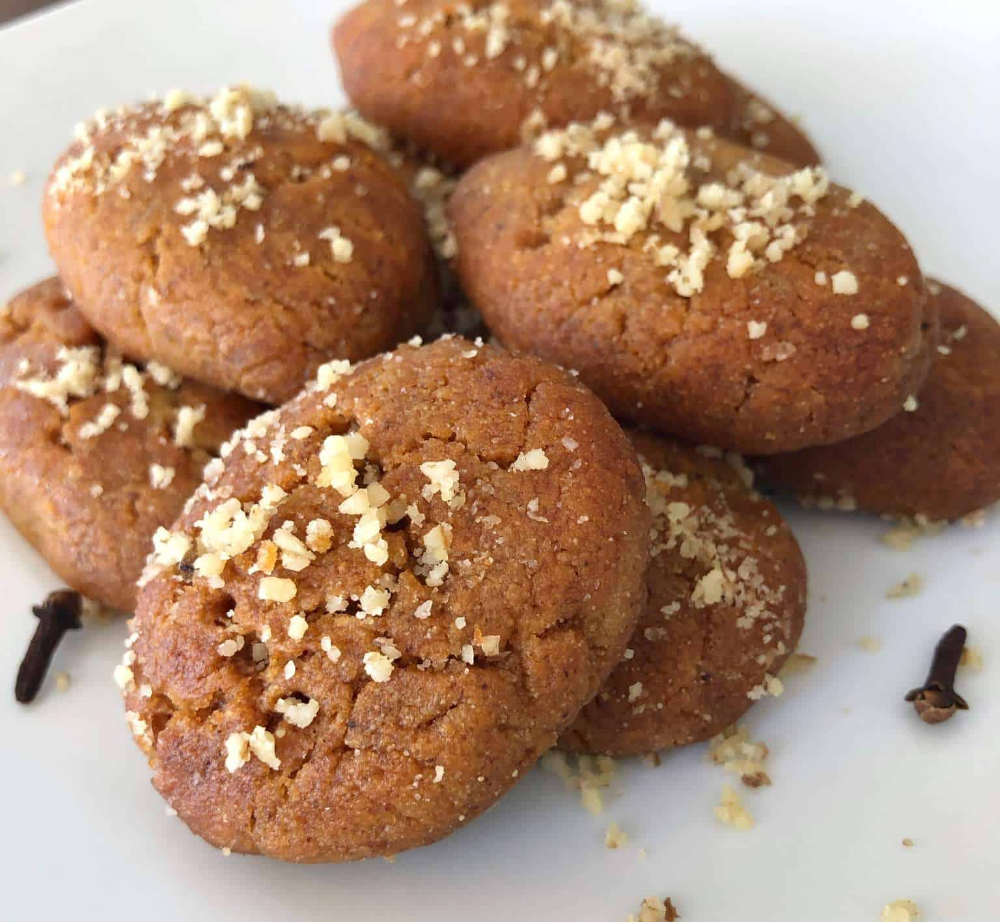

Melomakarona
Melomakarona

Description
Melomakarona (μελομακάρονα) are traditional Greek Christmas cookies, that are served during Christmas time throughout Greece. The word “melomakarona” is a combination of the two words “meli”, which means honey and “makarona”. “Makarona” comes from the ancient word “makaria” and means blessed.
Ingredients (for 50 pieces)
For the melomakarona
- 150g fine semolina
- 500g flour
- 1/2 tbsp baking powder
- 100g orange juice
- 3 tbsps cognac
- 100g sugar
- 1 flat tbsp powdered cinnamon
- 1/3 tsp nutmeg powder
- 1/3 tsp clove powder
- 1 tsp vanilla extract
- 1/2 tbsp baking soda
- 90g water
- 125g olive oil
- 125g vegetable/sunflower oil
- 50g honey
- zest of 2 oranges
For the syrup
- 300g water
- 600g sugar
- 2 cinnamon sticks
- 3 whole cloves
- 1 orange cut in half
- 200g honey
For the garnish
- 200g chopped walnuts
- powdered cinnamon (optional)
- powdered clove (optional)
Steps
- Start by making the syrup: In a pot add all the ingredients for the syrup, besides the honey and bring to the boil. Boil for 3-4 minutes, until the sugar has dissolved and remove from the stove. Stir in the honey and set aside to cool completely.
- Prepare the dough for the melomakarona. In a bowl add the semolina, flour and baking powder and mix with a whisk to combine.
- In another large bowl add the orange juice, the cognac, the sugar and spices (nutmeg, cinnamon, clove, vanilla) and mix. Add the baking soda and whisk immediately for 5-10 seconds until the ingredients combine and the baking soda dissolves and starts to foam. Pour in the bowl the water, the oil, the orange zest and honey and whisk to combine.
- Now it’s time to combine the two mixtures. Add the mixed flour, semolina and baking powder (from step 2) in the bowl with the rest of the ingredients from step 3 and start kneading the dough for the melomakarona. Knead the dough for the melomakarona using your hands, until the ingredients combine and the dough is smooth and soft and slightly sticky. Be careful not to overwork the dough as they will become tough.
- Preheat the oven at 180C / 356F. Layer the bottom of 4 large baking trays with parchment paper and start shaping the melomakarona. Pinch a portion of dough about the size of a walnut – 30g / 1oz and shape with your palms into a smooth oblong shape, like a small egg. Place on the baking tray, push lightly the top with a fork and pierce three times on top about half way through the dough. Continue with the rest of the dough.
- Depending on how large on oven you have when your first two trays are ready you can start baking them. Place the baking trays with the melomakarona in the oven and bake for approx. 15-20 minutes, until the melomakarona are lightly and evenly browned and cooked through. If you’ve made them bigger, you’ll need to bump up the cooking time!!
- When the melomakarona come out of the oven, dip them immediately in the cold syrup, flipping them with a slotted spoon to absorb the syrup for approx. 10-20 seconds, depending on how syrupy you like them. Remove the cookies using a slotted spoon, place on a platter and sprinkle with chopped walnuts.
- While you are dipping your first couple of tray in the syrup add the next two in the oven to bake. Don’t forget to set your timer!!
- Store the melomakarona at room temperature in an airtight container. They will keep for all your Christmas Holidays!